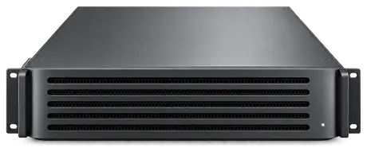

⌁
院内処理
機密データを扱う推論・検索・要約をローカル環境で処理します。
カルテ、院内文書、研究データ。外部サービスへ簡単に送れない情報だからこそ、AIをデータのある場所へ置きます。
通常運用はインターネット接続なしを標準構成に。データ処理は現場のハードウェア上で完結します。
機密データを扱う推論・検索・要約をローカル環境で処理します。
院内文書、業務フロー、研究用途に合わせて施設ごとのAI Agentを構築します。
ハードウェア導入後も、モデル・Agent・セキュリティ更新を継続的に提供します。
診断そのものではなく、情報の検索・要約・文書作成・研究支援から導入できます。最終確認と判断は医療従事者が行います。
長い診療履歴から必要情報を整理。
規程・マニュアル・資料を自然言語で検索。
院内で音声を文字化し、文書作成を支援。
研究資料の検索・分類・要約を支援。
施設独自の業務に合わせてAIをカスタマイズ。
GENBA AI本体を常時インターネットへ接続する必要はありません。検証済みのモデル、Agent、セキュリティ更新を、署名済みのオフライン更新パッケージとして定期提供する運用を想定しています。
現場の規模と必要なモデルサイズに合わせて、3段階のPrivate AI Infrastructureを提供します。


すべての製品で継続サポートプランを用意。Local LLMの更新、AI Agentの改善、セキュリティ更新、現場ごとのカスタマイズを継続します。
GENBA Studioの導入相談、またはRack / Infrastructureの先行案内を希望する方へ。
メールアドレスをご登録ください。
ご登録いただいたメールアドレスは、GENBA AIの導入相談・製品案内のために利用します。患者情報・診療情報などの機密情報は送信しないでください。プライバシーポリシー